retail_ts is U.S. retail and food services sales data from the Census Bureau’s monthly retail trade survey, which I downloaded from FRED. It’s monthly, in millions of dollars, starting in January 1992, and has two series: RSAFS (seasonally adjusted) and RSAFSNA (not seasonally adjusted). The index is Month and the key is series_id because both series are stored in long format. can_gas is Canadian natural gas production that comes with the fpp3 package. It’s monthly, in billions of cubic meters, from January 1960 to February 2005. The index is also Month, but it has no key since it’s only one series.
2.2a
library(tidyverse)
Warning: package 'purrr' was built under R version 4.5.2
── Attaching core tidyverse packages ──────────────────────── tidyverse 2.0.0 ──
✔ dplyr 1.1.4 ✔ readr 2.1.5
✔ forcats 1.0.1 ✔ stringr 1.5.2
✔ ggplot2 4.0.0 ✔ tibble 3.3.0
✔ lubridate 1.9.4 ✔ tidyr 1.3.1
✔ purrr 1.2.2
── Conflicts ────────────────────────────────────────── tidyverse_conflicts() ──
✖ dplyr::filter() masks stats::filter()
✖ dplyr::lag() masks stats::lag()
ℹ Use the conflicted package (<http://conflicted.r-lib.org/>) to force all conflicts to become errors
library(fpp3)
Warning: package 'fpp3' was built under R version 4.5.2
Rows: 417 Columns: 3
── Column specification ────────────────────────────────────────────────────────
Delimiter: ","
dbl (2): RSAFS, RSAFSNA
date (1): observation_date
ℹ Use `spec()` to retrieve the full column specification for this data.
ℹ Specify the column types or set `show_col_types = FALSE` to quiet this message.
# A tsibble: 6 x 2 [1M]
Month Volume
<mth> <dbl>
1 1990 Jan 12.5
2 1990 Feb 11.2
3 1990 Mar 11.6
4 1990 Apr 11.1
5 1990 May 11.0
6 1990 Jun 10.1
2.6b
# Add ability to pull certain time-frames (added month as col)can_gas_recent <- can_gas_recent |>mutate(year =year(Month),month =month(Month, label =TRUE),quarter =quarter(Month))# Use new month col^ to get average Volume per cal monthcan_gas_recent |>as_tibble() |>group_by(month) |>summarize(avg_volume =mean(Volume))
# A tibble: 12 × 2
month avg_volume
<ord> <dbl>
1 Jan 17.0
2 Feb 15.3
3 Mar 16.3
4 Apr 15.7
5 May 15.7
6 Jun 14.9
7 Jul 15.6
8 Aug 15.6
9 Sep 15.1
10 Oct 16.2
11 Nov 16.2
12 Dec 17.1
Since 1990, December has the highest average at ~17.1 and June has the lowest at ~14.9.
2.6c
# Make & define variables for next month and same month last yearcan_gas_recent |>mutate(next_month = Month +1,same_month_last_year = Month -12) |>head()
# A tsibble: 6 x 7 [1M]
Month Volume year month quarter next_month same_month_last_year
<mth> <dbl> <dbl> <ord> <int> <mth> <mth>
1 1990 Jan 12.5 1990 Jan 1 1990 Feb 1989 Jan
2 1990 Feb 11.2 1990 Feb 1 1990 Mar 1989 Feb
3 1990 Mar 11.6 1990 Mar 1 1990 Apr 1989 Mar
4 1990 Apr 11.1 1990 Apr 2 1990 May 1989 Apr
5 1990 May 11.0 1990 May 2 1990 Jun 1989 May
6 1990 Jun 10.1 1990 Jun 2 1990 Jul 1989 Jun
Data is summed because we want the total gas produced in that quarter (3 months, so sum months 1, 2, 3). The mean, which we already did above, would give us the average volume of each month within the quarter, which, to put it simply, we don’t want.
Yes, the data still seems to be seasonal. Changing to quarters gets rid of the monthly seasonality within each quarter, but you can still see seasonal patterns across quarters.
2.7a & 2.7b
# Simple time series plot + layer original plotretail_ts |>autoplot(sales)
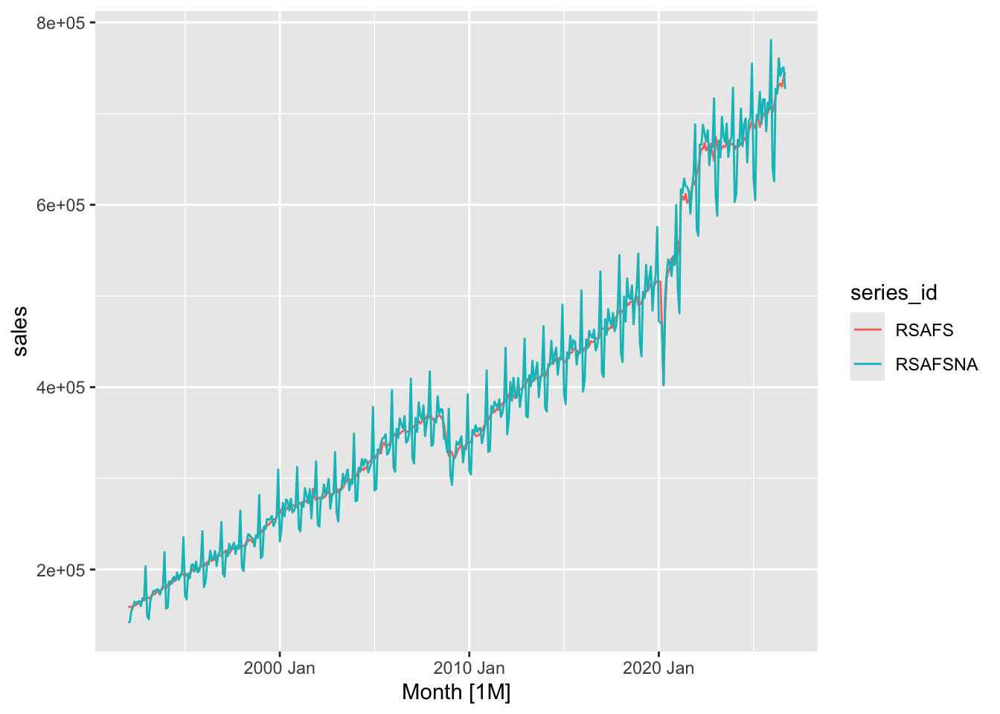
retail_ts |>autoplot(sales) +labs(title ="U.S. Retail and Food Services Sales",subtitle ="Seasonally adjusted vs. not seasonally adjusted",x =NULL, y ="Millions of dollars", color =NULL ) +theme_minimal()
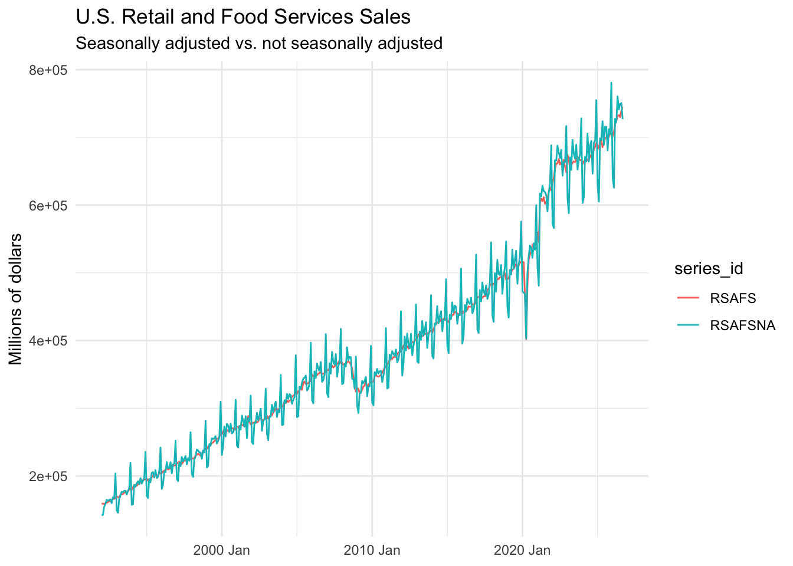
The NSA series has a sawtooth-like pattern that seems to repeat annually. Sales spike in December right before the holidays, then drop quickly in the following months, with smaller spikes near summer. The SA series doesn’t show a pattern like that at all. It’s a smooth line that goes right through the middle of the NSA line. They have the same upward trend, and both show the same general large movements (the COVID recession, the 2008 crisis, etc.). Seasonal adjustment removes only the repeating within-year pattern and not the overall patterns year to year.
2.7c
# Plot for Canadian gas production can_gascan_gas |>autoplot(Volume) +labs(title ="Canadian Natural Gas Production",subtitle ="Monthly, January 1960 – February 2005",x =NULL, y ="Billions of cubic metres") +theme_minimal()
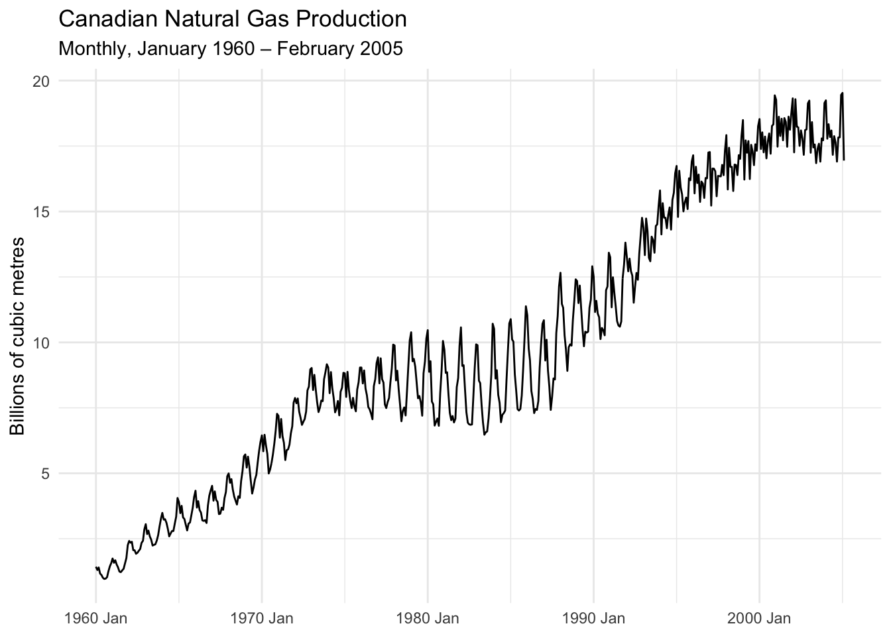
2.7d
# Add geom_smooth to add trend linecan_gas |>autoplot(Volume) +geom_smooth(method ="loess", se =FALSE, color ="red") +labs(title ="Canadian Natural Gas Production with Smoothed Trend",x =NULL, y ="Billions of cubic metres" ) +theme_minimal()
`geom_smooth()` using formula = 'y ~ x'
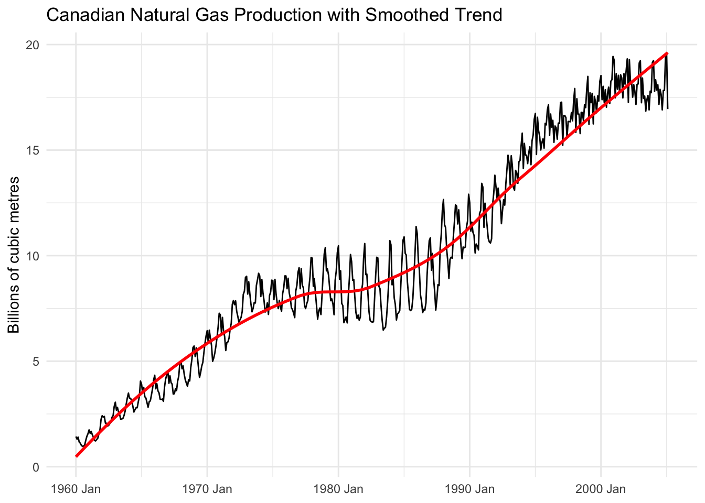
I chose to include a geom_smooth() layer, which adds a smoothed trend line that follows the data and makes long-run variation and trends easier to see.
Transformations
3.1a
Seasonal swings grow as the series does only during the first part of the sample. From 1960 to 1980 the swings get much larger as production grows. After the late 1980s, the swings decrease back to a more consistent variation, which means the swings aren’t proportional to the level over the entire sample.
3.1b
# Define log(Volume) colcan_gas <- can_gas |>mutate(log_volume =log(Volume))# Plot log(Volume)can_gas |>autoplot(log_volume) +labs(title ="Log of Canadian Natural Gas Production",x =NULL, y ="log(Volume)") +theme_minimal()
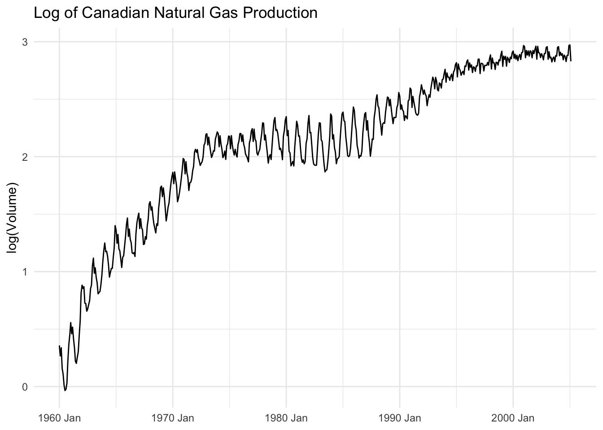
With logging, the steepness of the growth in certain periods, like the mid 1990s–2000s, is greatly flattened. The swings now look more consistent across the plot, apart from the region between 1970 and 1990. That being said, I think the changes point to logging being a good choice, since it makes anomalies and obvious differences between time periods less dramatic and gives a percentage base to compare different periods on.
3.1c
# Log for retail data (define and plot)retail_nsa <- retail_ts |>filter(series_id =="RSAFSNA") |>mutate(log_sales =log(sales))retail_nsa |>autoplot(sales) +labs(title ="NSA Retail Sales (Level)",x =NULL, y ="Millions of dollars") +theme_minimal()
The case for logging is stronger here because before logging, the December spikes looked much larger as time went on, which is misleading. While the overall dollar amount grew, the spike as a percentage of sales is very consistent after the log, which more accurately shows growth (or lack thereof).
3.2a
# Month to month percentage growth rates can_gascan_gas <- can_gas |>mutate(growth_direct =100*difference(Volume) /lag(Volume),growth_logdiff =100*difference(log_volume) )can_gas |>autoplot(growth_direct) +labs(title ="Month-over-Month Growth: Canadian Gas Production",x =NULL, y ="Growth rate (%)" ) +theme_minimal()
Warning: Removed 1 row containing missing values or values outside the scale range
(`geom_line()`).
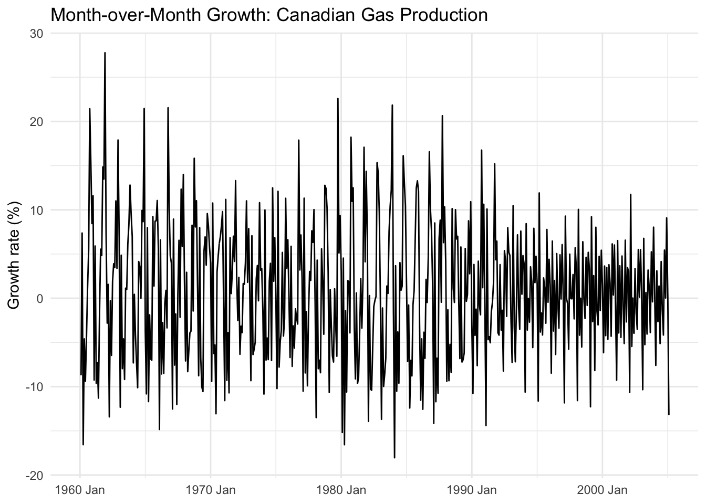
can_gas <- can_gas |>mutate(growth_gap =abs(growth_direct - growth_logdiff))can_gas |>autoplot(growth_gap) +labs(title ="Gap Between Direct and Log-Difference Growth Rates",x =NULL, y ="Absolute difference (percentage points)" ) +theme_minimal()
Warning: Removed 1 row containing missing values or values outside the scale range
(`geom_line()`).
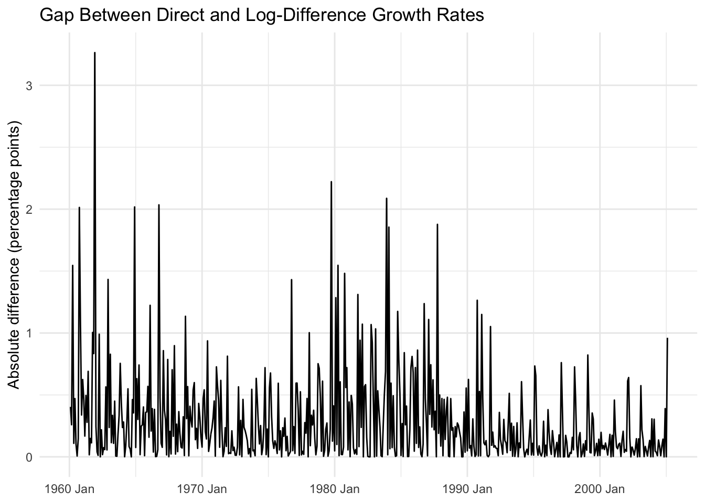
In most months the log difference approximation is good, but because monthly growth is often large here, the gap gets up to 2–3 percentage points during the months with the largest spikes/jumps.
3.3
# Month over month log diff for retail_tsretail_ts <- retail_ts |>group_by_key() |>mutate(growth_mom =100*difference(log(sales))) |>ungroup()retail_ts |>autoplot(growth_mom) +labs(title ="Month-over-Month Growth: SA vs. NSA Retail Sales",x =NULL, y ="Growth rate (%)", color =NULL ) +theme_minimal()
Warning: Removed 2 rows containing missing values or values outside the scale range
(`geom_line()`).
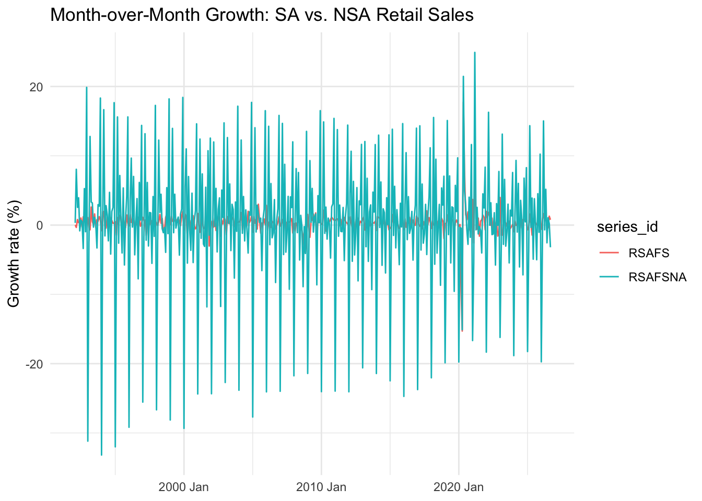
NSA growth is way noisier than SA’s. It varies by double digits almost every year, while SA sits pretty consistently in the +/- 1–3% range. It’s noisier because it contains that sales spike in December around the holidays and doesn’t adjust anything to account for it. Seasonal adjustment removes those patterns, so SA is much smoother.
# Plot seasonal pattern SA salesretail_ts |>filter(series_id =="RSAFS") |>gg_season(sales) +labs(title ="Seasonal Pattern in SA Retail Sales",y ="Millions of dollars" ) +theme_minimal()
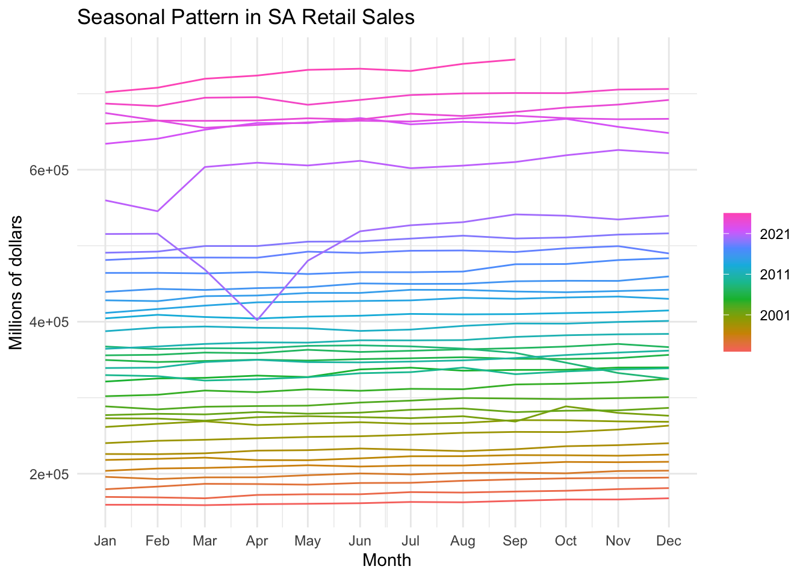
The NSA series shows a clear, repeating seasonal pattern that dips in January to February, trends upward in the middle of the year, and spikes in December. Once seasonally adjusted, the SA series flattens out across each year, which shows the seasonal pattern was removed.
4.1c
# Seasonal pattern Canadian gascan_gas |>gg_season(log_volume) +labs(title ="Seasonal Pattern in Canadian Gas Production",y ="log(Volume)" ) +theme_minimal()
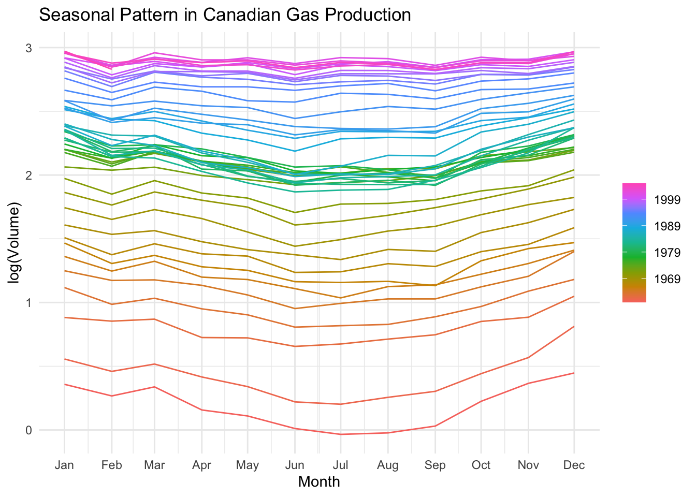
Production seems to be higher in the winter and lower in the summer. This makes sense because most people heat ther homes in the winter, which drives gas use, and thus production.
4.2
can_gas |>gg_subseries(log_volume) +labs(title ="Subseries Plot: Canadian Gas Production",y ="log(Volume)" )
The seasonal factor is largest in December at about 1.13–1.15 (13–15% above the trend). The overall size of the seasonal swings is pretty consistent over time, although the December spike has shrunk a bit in recent years.
4.3b
# Compare our ARIMA vs official SAsa_compare <- retail_nsa_x13 |>as_tibble() |>select(Month, mine = season_adjust) |>left_join( retail_ts |>filter(series_id =="RSAFS") |>as_tibble() |>transmute(Month, census = sales),by ="Month" ) |>mutate(pct_diff =100* (log(mine) -log(census)))sa_compare |>ggplot(aes(x = Month, y = pct_diff)) +geom_line() +labs(title ="My X-13 Seasonal Adjustment Minus the Census Bureau's",x =NULL, y ="Difference (%)" ) +theme_minimal()
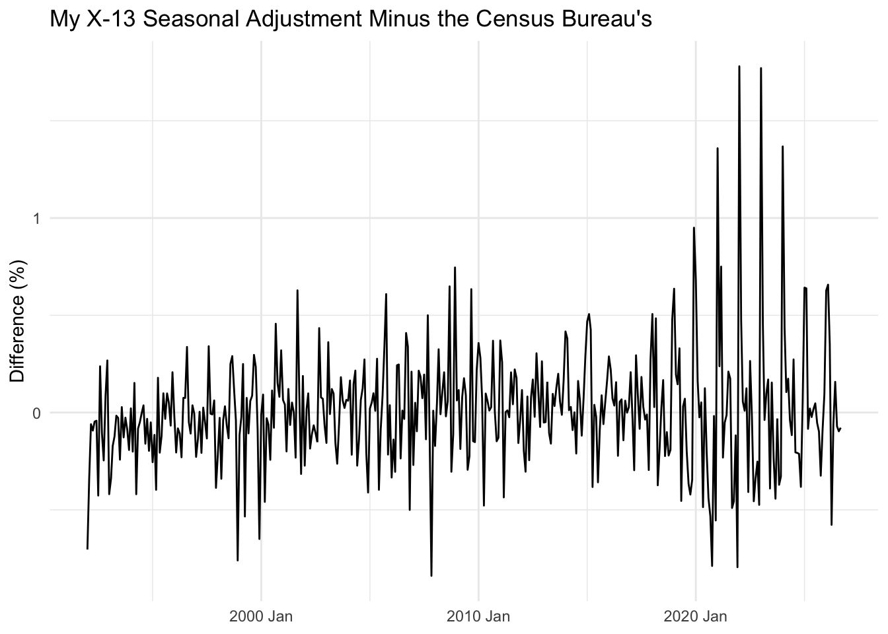
My adjustment matches pretty closely, with most of the difference under 1% across the whole series. The biggest discrepancies come around and after 2020, which is no surprise in economics at this point.
4.4a
# Linear trend and seasonal dummiescan_gas_fit <- can_gas |>model(TSLM(log_volume ~trend() +season()))report(can_gas_fit)
The estimated trend coefficient is about 0.004 (0.00397), which means growth is around 0.40% per month. The most significant seasonal effect is in June (t = −4.777), with June around 25% lower than January after accounting for the trend.
4.4b
# Fitted vals against actual datacan_gas_fit |>augment() |>ggplot(aes(x = Month)) +geom_line(aes(y = log_volume, color ="Actual")) +geom_line(aes(y = .fitted, color ="Fitted")) +labs(title ="Linear Trend + Seasonal Dummies Fit: Canadian Gas Production",y ="log(Volume)", color =NULL) +theme_minimal()
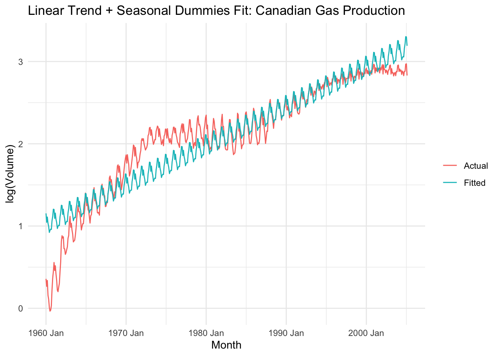
The linear model captures the overall trend and the timing of the seasons but fits poorly over longer periods. It overpredicts in the 1960s and after 2000, underpredicts in the 1970s, and overshoots the seasonal swings in the 1990s–2000s by forcing that fixed seasonal factor.
4.4c
# Residuals for ljung-boxcan_gas_fit |>gg_tsresiduals()
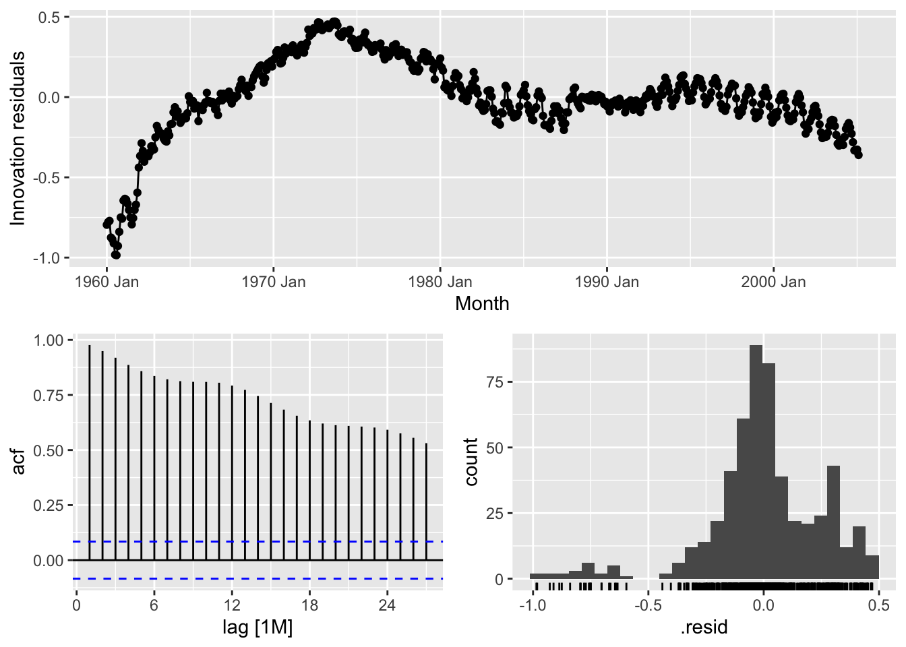
can_gas_fit |>augment() |>features(.innov, ljung_box, lag =24)
The residuals do not seem to be white noise. The plot shows long, slow waves that persist for years. The ACF also begins at ~0.98 at lag 1 and decays super slowly, so there is still an obvious structure. The Ljung–Box stat is around 7,774 with a p-value of basically 0, so at the 5% level we reject the null hypothesis that the residuals are white noise.
Warning: The future dataset is incomplete, incomplete out-of-sample data will be treated as missing.
1 observation is missing at 2005 Mar
.model
.type
MAE
RMSE
snaive
Test
0.562
0.702
tslm
Test
4.009
4.362
The first forecast is for Jan 1980 and the last is for Feb 2005. The SNAIVE model (MAE = 0.562, RMSE = 0.702) seems to forecast a lot more accurately than the linear model (MAE = 4.01, RMSE = 4.36). The two metrics agree.
5.2a
# Diebold–Mariano test p=1errs <- gas_cv_fc |>as_tibble() |>left_join(as_tibble(can_gas) |>select(Month, actual = Volume),by ="Month") |>mutate(e = actual - .mean) |>select(Month, .model, e) |>pivot_wider(names_from = .model, values_from = e) |>na.omit()forecast::dm.test(errs$snaive, errs$tslm, h =1, power =1)
Diebold-Mariano Test
data: errs$snaiveerrs$tslm
DM = -31.278, Forecast horizon = 1, Loss function power = 1, p-value <
2.2e-16
alternative hypothesis: two.sided
DM = −31.278 and p-value < 2.2e-16, which means we reject the null hypothesis that the two models forecast equally accurately. The negative stat means the SNAIVE model has smaller absolute errors, so it’s significantly more accurate than the linear trend model.
Warning: The future dataset is incomplete, incomplete out-of-sample data will be treated as missing.
1 observation is missing at 2005 Mar
.model
.type
MAE
RMSE
snaive
Test
0.562
0.702
tslm
Test
2.095
2.425
When using a rolling window, the SNAIVE accuracy stays the same (MAE = 0.562, RMSE = 0.702), while the linear trend with dummies model gets a lot better (MAE = 2.09, RMSE = 2.42). The TSLM model changed more beause the trend is not a single straight line. With an expanding window, the rapid growth in the 1960s keeps pushing the estimated trend too high. The 20-year window drops the old problematic data and only fits the recent trend.
Reflection
The residuals from the trend + seasonal model still had a ton of structure left in them. They stayed above or below zero for years at a time, and the ACF started at ~0.98 and barely died off. This seems to come from the model missing that the trend isn’t one straight line. Gas production grew fast, then stalled, grew again, and then flattened. It also forces the same seasonal effect every year, even though the swings clearly got bigger and then smaller over time. The forecast evaluation shows this since SNAIVE, which just uses last year’s value, easily beat the trend model, and the trend model got way better once it could drop/cut the old data. I’d expect a model that captures this to use recent past values of the series to forecast the next one and to let the trend and seasonal pattern change over time instead of keeping them the same.